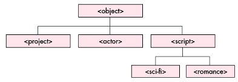
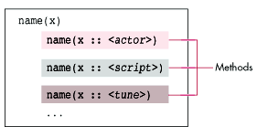
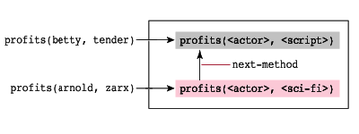
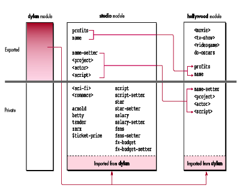

Dylan is a new object-oriented dynamic language (OODL) that's attracting a lot of
attention. Like C++, it's designed for efficient compilation and delivery of mainstream
commercial applications. However, Dylan differs from C++ in important ways that
make it more powerful and flexible. Here we'll focus on one important difference from
C++: the way classes and their methods are organized.
The organization of classes and functions is different in Dylan than in C++. In C++,
classes are used in two ways: to encapsulate data and as a scoping mechanism. Methods
in C++ "belong to" classes, and there are many complex mechanisms governing access
to methods from "inside" and "outside" a class. In Dylan, classes are used only for data
encapsulation -- there's no notion of methods being owned by classes. As a result,
specifying and using methods is cleaner, simpler, and more expressive.
Access is simplified and abstracted through modules, which are a way of grouping
related classes, methods, and variables. Rather than being tied to a single class, each
method belongs to a family called a generic function. Eachgeneric function can operate
on one or more related classes, and can be extended across one or more modules. We'll
talk more about generic functions, polymorphism, and modules later in this article.
Dylan has many other features that distinguish it from C++, including:
There's not enough space here to do justice to each of these topics, so we'll just touch
on some of them as we discuss classes, functions, and modules. As you might expect,
this article assumes you have some familiarity with basic object-oriented concepts,
such as classes, instances, and inheritance.
On this issue's CD, you'll find a freeware Dylan interpreter, called Marlais, that you
can use to execute code written in Dylan. Simply run the application and enter your
code at the prompt. Also on the CD are the code samples you'll see in this article, plus
the Dylan Interim Reference Manual and other Dylan goodies.
Apple's implementation of Dylan, called Apple Dylan, is planned to ship later this year.
One great feature of Apple Dylan is that it allows you to call existing C and
C-compatible code libraries, such as the Macintosh Toolbox. See "Creole: Using the
Toolbox and Other C Code From Within Dylan Code" for details.
______________________________
With any new language, you're bound to wonder whether you'll be able to get at
the "really good stuff." You know, interfaces always seem to be published just
for C programmers, and nobody else. I don't mean merely the Macintosh
Toolbox, but any other code already written by you or a third party, like
database access routines or advanced graphics libraries. In many cases (such
as with the Macintosh Toolbox), you may not have access to the source code, so
recompiling or translating it into the new language is simply not an option.
Apple has designed a cross-language extension to the Dylan language. This
extension, called Creole in Apple Dylan, allows you to build programs with
parts written in both Dylan and C or C-compatible languages. We at Apple hope
the extension will be supported by other Dylan implementations, but since the
extension isn't part of the standard Dylan language, it's not required. (The
Marlais interpreter on this issue's CD doesn't support it.) In the future, Apple
will also support the System Object Model (SOM) extension, which is used by
OpenDoc. Here we'll take a look at some features of Apple Dylan's Creole
implementation.
Once you import C interfaces into Dylan, you can call C functions and refer to
C structsas if they were Dylan functions and objects. There's no need to
translate the C headers first; Creole reads them directly. In the following
simple example, we import the interface file OSUtils.h, which contains the
Toolbox function SysBeep; we can then, for instance, callSysBeep(1) from
Dylan.
define interface
#include "OSUtils.h",
import: {"SysBeep"};
end interface;
Creole provides these additional facilities:
A define interface statement imports one or mointerface files and creates
Dylan classes, constants, and functions corresponding to the C types,
constants, and functions in the interface files. Like any Dylan expression, a
define interface statement exists in a particular module, as do the
variables that it defines. You can export and rename these variables using
module options just as you would for normal Dylan variables (as discussed
later under "The Role of Modules").
Many options are available to override Creole's default behavior. For example,
you can do any of the following:
______________________________
Dylan is fully and consistently object-oriented, much like Smalltalk(TM). Everything
is an object, including numbers, strings, and even functions and classes themselves.
Each object descends from a single common ancestor class, named <object>.
The <> characters are not some fancy operator but are merely a
typographic convention for indicating the name of a class in Dylan, just as
all-uppercase letters might indicate a macro in C++. You're allowed to name a
class without the <> characters, but that would be considered bad style.*
To illustrate how classes are used in Dylan, let's look at one of our samples, SimMogul,
to model Hollywood high finance. In Listing 1, we define a few classes, creating the
inheritance hierarchy shown in Figure 1.
Listing 1. SimMogul -- basic version
define class <project> (<object>) slot script; // All you need is a hot script slot star; // and a big name. end class <project>; // Last two words are optional. define class <actor> (<object>) slot name; // Actor's name slot salary; // Cost to hire slot fans; // Audience size end class; define class <script> (<object>) slot name; // Script's name slot fx-budget; // Cost of special effects end class; define class <sci-fi> (<script>) end class; define class <romance> (<script>) end class;

Figure 1. Inheritance hierarchy of SimMogul classes
The first thing you might notice about this code is that Dylan identifiers draw on a
richer stock of characters than do most languages. Dylan identifiers are
case-insensitive and can include characters like <, >, *, +, and -, which are
traditionally reserved for operators. As a result, operators like these must be
surrounded by spaces when used in formulas (as you'll see later in the definitions for
profits in Listing 5).
As shown in Listing 1, each define class statement begins with the name of the class
being defined, followed by its parent (or superclass) in parentheses. Dylan supports
multiple inheritance; multiple superclasses would be listed in the parentheses,
separated by commas. For this short example, however, we'll stick to single
inheritance.
<project> is a simple class with two slots (comparable to data members in C++)
named script and star. This is a pretty basic structure that doesn't include any
options, but it illustrates the syntax for class definitions. There's no need to create
constructor or destructor methods; that's taken care of automatically. The last two
words, class <project>, are optional, but if you provide them, the name must match
that of the class being defined. You can just say end or end class instead if you like,
which is what we've done for the remaining classes.
TYPE DECLARATIONS AND AUTOMATIC MEMORY MANAGEMENT
Type declarations are optional in Dylan because values, not storage locations, are
strongly typed. Each object's type is always known from the moment it's created, so
there's less need to declare types on storage locations. It's OK to leave off type
declarations, as we did for slots in Listing 1. This makes rapid prototyping much
easier than in C++.
Listing 2 shows a version of SimMogul that does contain some type declarations. The
definition of <actor>, for example, has a slot declared asname :: <string>, which
specifies the type of the nameslot. The compiler will generate code that guarantees
that only strings can be stored in this slot; attempts to store anything else will cause
an error.
Listing 2. SimMogul -- embellished version
define class <project> (<object>)
slot script; // All you need is a hot script
slot star; // and a big name.
end class <project>; // Last two words are optional.
define class <actor> (<object>)
slot name :: <string>, // Actor's name
required-init-keyword: name:;
slot salary :: <number>, // Cost to hire
init-value: 1000000,
init-keyword: salary:;
slot fans :: <number>, // Audience size
init-value: 1000000,
init-keyword: fans:;
end class;
define class <script> (<object>)
slot name :: <string>, // Script's name
required-init-keyword: name:;
slot fx-budget :: <number>, // Cost of special effects
init-value: 10000,
init-keyword: fx-budget:;
end class;
define class <sci-fi> (<script>)
inherited slot fx-budget, init-value: 20000000;
end class;
define class <romance> (<script>)
inherited slot fx-budget, init-value: 0;
end class;
define variable arnold =
make(<actor>, name: "Arnold", fans: 10000000);
define variable betty =
make(<actor>, name: "Betty", fans: 5000000);
define variable tender :: <script> =
make(<romance>, name: "Tender Sunshine");
define variable zarx :: <script> =
make(<sci-fi>, name: "Land of the Zarx-Eaters");
define constant $ticket-price = 7;
Another reason to provide type declarations is that it allows the compiler to generate
more efficient code. For example, if you wrote code that stores an appropriately
declared value in an <actor>'s name slot, at compile time the compiler would be able
to deduce the value's type. Values that are known to be strings will be stored
efficiently, with no runtime type checking. Those known not to be strings will generate
compile-time warnings, just as they would in a strongly typed language. If you choose
to leave off declarations, the compiler will insert instructions for runtime type
checking, so you'll have crash-safe code no matter what. This is an example of how
Dylan always lets you compile in a way that's both maximally safe and efficient.
In general, Dylan programs should crash much less often than comparable C programs,
because most errors will be detected and handled gracefully and automatically.
Automatic memory management is one big source of this safety, since it eliminates the
majority of bugs that usually come from manually operating on raw memory pointers.
Dylan's ability to ensure safety, however, is limited when working with code imported
from outside Dylan, such as the Macintosh Toolbox, which forces Dylan programmers
to use raw memory pointers in some cases. Apple Dylan will insulate programmers as
much as possible from these pointers with an application framework.
CREATING OBJECTS AND FILLING THEIR SLOTS
Your application creates objects by calling make, which createsinstances of a class.
Listing 2 gives some examples of actors and scripts being created with calls to make.
Values for slots are provided with keyword arguments to make, called init-keywords.
Dylan keywords, which are similar to Smalltalk keywords, are a way to provide
optional function parameters. I'll have more to say about specifying and using
keywords in function calls in the section on functions.
Since the slots in <project> don't have init-keywords, you can't provide values for
them when you use make to make projects. If a project is created with
make(<project>), the slots are uninitialized, and any attempt to read their values
in this uninitialized state is an error that will be detected and reported.
The name slot in <actor> has a required-init-keyword:option, which is used
further down to specify the name of the arnoldobject. Required init-keywords are
commonly used for slots with no default value because this requires callers to provide
a value when they make objects.
The other slots in <actor>, salary and fans, have default values as well as
init-keywords. When an actor is created, the slot's value can be defaulted (for
example, arnold's salary) or overridden (for example, arnold's fans). Slots can
also be initialized with theinit-function: option, which calls a function to compute
the default value.
The declaration salary :: <number> restricts the salaryslot to hold only numbers.
Notice that we didn't choose a specific numeric type for the salary slot type (such as
short, int, long, or double), though we easily could have. Dylan provides a rich
library of numeric types, including integers of unlimited size (which are good for
devalued currencies and salaries of major athletes). By using <number> instead of a
more specific numeric type, your type declaration becomes a tool for documentation
and error checking, even while you're in the midst of rapid prototyping. We're not
obliged to make some arbitrary and premature optimization at this stage, as we would
with C or C++. Using <number>captures as much of our design as we want for now;
we can always come back and tune it later.
A Dylan class inherits slots from all its superclasses and can also define its own new
slots, just as in C++. All slots in a given class must be unique; there cannot be two
different slots with the same name. You can override some properties of an inherited
slot, however, by partially respecifying the slot. Taking a look at the definition of
<sci-fi> in Listing 2, we see that it overrides the default init-value for fx-budget
inherited from<script> with a somewhat higher value. The keyword
inheritedindicates that the slot is inherited from a superclass; it's not a new slot
with the coincidentally identical (and therefore illegal) name.
You can specify many other interesting options for slots, such as classallocation,
which shares a singly allocated value used by all instances of that class; class
allocation roughly corresponds to a static data member in C++. Dylan also lets you
provide virtual allocation for slots. Rather than being stored in the slot, a virtual
slot's value is computed by a function each time the slot is referenced. This feature is
missing from C++ and is very different from what C++ refers to as virtual data
members.
USING VARIABLES AND CONSTANTS
In Listing 2, we make some objects out of the classes and bind them to global variables
with the define variable statement. The variables holding the actors have no type
declaration -- we didn't do this with any design considerations in mind, but just to
show you that it can be done. Like slot declarations, type declarations for global
variables are optional; they're used to increase efficiency, not to change the program
logic. The other two variables have :: <script> type declarations, which is OK, since
the values stored there are indirect instances of <script>. The variable tender is an
instance of <romance>, which is a subclass of <script>.
Also included is a define constant statement, which looks just likedefine
variable, except that once you give it a value, the running program isn't allowed to
change it. The $ in the name $ticket-price is something of a coincidence. By
convention, all constants in Dylan are given names beginning with a dollar character,
as in define constant $pi = 3.14159.
It's worth noting that define constant doesn't restrict mutable objects from being
mutated. Some collections, such as vectors, are mutable in that the value of an element
can change, and class instances are mutable in that a slot can change (unless you
declare the slot as a constant in the class definition, of course). Since define
constant describes the identifier, not the object, what it really means is that the
identifier will always refer to that particular object, and to no other object. This is
the same as aconst pointer in C++, where the pointer is not allowed to change but the
object pointed to may be mutated.
$ticket-price is a real constant after all, because its value of 7 (like all numbers)
cannot be mutated; for example, you cannot change the 7 to an 8 without changing the
object itself.
VARIABLES HOLD ANYTHING
Variables (and constants, which are a kind of variable) can contain any type of Dylan
data object, including numbers, strings, and user-defined objects like actors and
scripts. But in Dylan, the classes and functions themselves are also objects, and hence
are also stored in variables. It turns out that<actor> is just another variable, as is
arnold. The value of the variable whose name is <actor> happens to be a class, and
the value of the variable whose name is arnold is an instance of that class.
When we say everything's an object in Dylan, we mean everything. A variable is just a
way of naming an object so that you can refer to it in your program. Since you can
refer to functions or classes just as easily as you can refer to numbers, we think of
them as "variables." So don't be shocked when you see documentation referring to
something like print as a variable. It's just a variable whose value happens to be a
function.
Dylan uses a simple, consistent, functional interface for slot access, which avoids
many of the confusing aspects of C++'s data members. Functions in Dylan have many
elegant features that make them more powerful than their counterparts in C++, but
without adding a lot of complicated syntax. In this section we'll talk about some of the
ways you can create and use Dylan functions.
GETTERS AND SETTERS
By default, a pair of accessor functions, called getter and setterfunctions, is created
for each slot. For example, the definition of<actor> in Listing 1 automatically creates
the following six functions:
name(a) // Gets the name of actor a name-setter(new, a) // Sets the name of actor a to new salary(a) // Gets the salary of actor a salary-setter(new, a) // Sets the salary of actor a to new fans(a) // Gets the audience size of actor a fans-setter(new, a) // Sets the audience size of actor a to new
Slot access in Dylan looks exactly like a function call, even though the compiler may
implement slot access much more efficiently. Alternatively, you can use the more
traditional dot notation for slot access. Therefore, the syntaxobject.property is
exactly equivalent to property(object). You can use whichever syntax best fits the
situation.
This functional interface is a great feature, because it allows a class's implementation
details to remain an abstraction for the users of a class. Thefans property, which
indicates the box office drawing power, might be stored as a slot in some classes or it
might be computed on the fly by a function for other classes. Users will always see a
functional interface, and never need to know about the internal implementation.
Whenever a slot reference appears on the left side of an assignment statement, the
reference is translated into a call to the appropriate setter function. For example,
these are all equivalent ways of changing the name slot of thearnold object:
arnold.name := "Arnie";
name(arnold) := "Arnie";
name-setter("Arnie", arnold);
Slots can also take a setter: option, which lets you provide the name of the setter
function. The default is to give it a name like name-setter, but you can use a
different name, or specify that no setter at all should be created. If there is no setter
function, you effectively make the slot's value read-only. As you'll see later in the
section on modules, you can also control read and write access to slots by selectively
exporting getter and setter functions to other modules.
POLYMORPHISM
Object-oriented languages, including Dylan, provide polymorphicfunctions, which
means a given function may be executed as one of several possible implementations of
that function, called methods. In our code above, name is just such a function. Calling
name(arnold) calls the name method for actors, but calling name(tender)
invokes thename method for scripts, which may have a very different
implementation.
So, when Dylan sees a call to name(x), depending on what type of objectis, one of
several methods is selected and executed. In Dylan, nameis called a generic function,
consisting of a family of namemethods that implement the functionality of name for
various classes (see Figure 2). Each of these methods "belongs to" its generic function
(in this case, name) rather than to a class. This is a key point; it's the core
difference between C++'s object model and Dylan's.

Figure 2. Generic function containing several methods
C++'s virtual methods are polymorphic only to the extent that they share a common
ancestor. In C++, if you wanted name to work on both actors and scripts, you'd have
to create a class (for example, nameableObject) just to contain the name method,
and then modify both actor and script classes to inherit from it. This scenario creates
quite a few unwanted complications. First, it clutters up your object hierarchies with
unnatural "glue" classes that have little to do with the problem domain being
represented. Second, it requires you to add inheritance links to bring together classes
that otherwise have no reason to be connected, which reduces modularity. Multiple
inheritance is extremely awkward in C++ (much less so in Dylan), so you usually
want to avoid it wherever possible when using C++.
You also may not have the desire or the ability to change classes near the root of a C++
class hierarchy, either because you don't have access to the affected classes' source
code, or because the recompilation time would be very costly. The latter is usually not
a problem in Dylan, because most commercial Dylan implementations (including Apple
Dylan) provide incremental compilation, which means you can edit, recompile, and
relink classes in a matter of seconds.
METHOD SPECIFICITY
As with slots and global variables, type declarations for Dylan function parameters are
optional. Providing type declarations, which is calledspecializing the method, restricts
a method to be valid for a specific set of operands. Listing 3 shows several methods
belonging to the doublegeneric function, specialized for various parameter types.
(The value returned by a Dylan function is simply the value returned by the last
expression executed in its body; there's no need for an explicit returnstatement.)
Listing 3. Method specificity
define method double (x) // No type declaration, default handler pair(x, x); // Works on any type of object end method double; define method double (x :: <number>)// Works on all numbers 2 * x; // Returns 2 times x end method double; define method double (x :: <string> // Works on all strings concatenate(x, x); // Returns "stringstring" end method double; define method double (x == cup:) // Works on the symbol cup: pint:; // Returns the symbol pint: end method double;
The first method in Listing 3 has no specialization at all, so it's equivalent to a default
specialization of x :: <object>, which means it will work on anything. It returns a
new structure (an instance of the built-in class<pair>), containing two pointers to
the argument x.
The default specialization might not be satisfactory for all objects, of course, so the
second method specializes the behavior for the case where xis a <number>. In this
case, double returns the argument multiplied by 2. For a <string>, the third method
returns a new string created by concatenating the argument to itself.
Dylan provides a largelibrary of collection types, including strings,
vectors, hash tables, and much more, along with an extensive and highly
consistent library of operations on them. Working with Dylan's collections is
much easier than with C, since you don't have the administrative headaches of
manual storage management.*
The last method in Listing 3 illustrates Dylan's ability to specialize on specific
instances (called singletons), not just whole classes. Through the use of == rather
than ::, the parameter is constrained by an equality test, not class membership. The
object in this case is a symbol, which is an interesting data type not found in C or C++.
A symbol is a case-insensitive immutable string, often used where you might use an
enumin C. In this method, double is defined to return the symbolpint: whenever the
argument is the symbol cup:.
The foo: syntax is a convenient way to refer to symbols in your code, but it
can be confusing, especially when passing symbols as keyword parameters in
function calls. Dylan provides a second, equivalent syntax for symbols, which
looks like a string with a # (for example, #"foo"). This also lets you create
symbols with spaces in their names.*
When double is invoked on an argument, the most specific method is invoked.
Singletons are considered to be the most specific; if a match isn't found, a method for
the most specific matching parameter type is found. For example, double("foo")
would invoke the third method, because<string> is more specific than <object>,
which is what the first method is specialized to. If no match is found, Dylan will catch
it and signal an error.
OTHER PARAMETER TRICKS: #REST, #KEY, AND RETURNED VALUES
In addition to having the normal kind of parameters (also called required parameters),
whose number and position are fixed, Dylan functions can take varying numbers of
additional parameters.
A #rest parameter collects an arbitrary number of arguments as a sequence. For
example, the following function takes one required argument,view, and any number of
additional arguments. A for loop is used inside the function to iterate over the
arguments.
define method polygon (view :: <view>, #rest points) for (p in points) ... end for; end method;
Here's an example of using this function:
polygon(myWindow, p1, p2, p3, p4, p5); // Typical usage
Keyword parameters specified with #key are quite handy, especially for functions
with many parameters, which often take default values. As we saw earlier,make takes
keyword parameters in order to create objects. These can be provided in any order by
the caller, or omitted entirely if default values are specified. The keywords themselves
provide an extra degree of clarity to the calling code, since they serve to document the
arguments they introduce. For example:
define method rent-car (customer :: <person>,
// Two required parameters
location :: <city>, // and up to 4 keywords
#key color = white:, // Default color is white
sunroof? = #f, // Default no sunroof
automatic? = #t, // Default automatic shift
days = 3) // Default 3-day rental
...
end method;
Notice the usage of #t and #f. These are the Dylan values for Boolean true and false,
respectively.
Some examples of using this function are as follows:
rent-car(arnold, dallas, days: 7, sunroof?: #t); rent-car(betty, dallas, days: 8, color: #"red"); rent-car(colin, vegas); // Everything defaulted
You also have the option of specifying the return parameters for Dylan functions, as
illustrated in Listing 4. This provides more information to the compiler to assist in
optimization, as well as documents your code for other users. Dylan functions can
return multiple values, which means the caller can get zero, one, or more than one
value from the callee. This lets you program in a cleaner, more functional style than
in C. In Dylan, you don't need to mix your input and output parameters and bash inputs
to make them outputs, or clutter your code with definitions for funny data structures
that do nothing more than carry the results of one function back to another.
Listing 4. Example of return declarations and multiple return values
define class <brick> (<object>) slot vert; slot horiz; slot depth; slot density; end class; define method calculate-weight (b :: <brick>) => weight :: <number>; // Declares return parameter let (x, y, z) = bounding-box(b); // Binds multiple values x * y * z * b.density; // Returns one value end method; define method bounding-box (b :: <brick>) => (height :: <number>, width :: <number>, length :: <number>); values(b.vert, b.horiz, b.depth); // Returns three values end method;
All methods in a generic function must be congruent. Basically, this means they must
all take the same number of required parameters, and they must agree on taking
keyword and rest values. There are a few more options you can specify for a generic
function using the define generic statement, which can also constrain method
congruency.
MULTIPLE POLYMORPHISM
One interesting feature of Dylan is that functions are multiply polymorphic(unlike in
C++ or Smalltalk). A function can have as many required parameters as you like, and
any or all of them can be specialized. When you call a generic function, a method is
picked based on the specializations of all the required parameters, not just of the first
one.
There are two methods in the profits generic function defined in Listing 5. The second
of these methods is more specialized than the first one, because its script parameter
(<sci-fi>) is more specific than that in the first (<script>). It just happens that
the script parameter is in the second position. When selecting the method to handle a
call likeprofits(betty, tender), Dylan determines that the first method is the only
one that's applicable, so that's the one that's used (see Figure 3). It turns out that both
methods are applicable in a call like profits(arnold, zarx). The second method is
more specific, so that's what gets invoked.
Listing 5.
define method profits (star :: <actor>, script :: <script>) (star.fans * $ticket-price) // Money from ticket sales - (script.fx-budget + star.salary); // minus expenses end method; define method profits (star :: <actor>, script :: <sci-fi>) next-method() / 2; // Sci-fi is out of fashion these days end method;

Figure 3. Method selection based on all arguments (not just the first one)
The body of the second profits method uses a special trick to inherit functionality
provided in the base method. It calls next-method, a Dylan function that calls the next
appropriate method in the generic function, in decreasing order of specificity. In the
example, next-method gets a numeric value calculated by the first method, divides
it by 2, and returns that to the caller. As a result, you don't have to write the basic
equation twice; new methods have the option of calling up the specificity chain and
doing what they want with the results. You can also add code to perform tasks before or
after calling next-method.
Dylan provides an important abstraction tool, called a module, which typically
contains several related functions and classes. Modules let you simplify or limit access
to objects by controlling their names. In other words, a module is a namespace, a set of
names and the objects they refer to.
A module's definition specifies which names are exported. This gives you control over
which variables, functions, classes, and slots are private to that module and which are
public. For example, suppose the code in Listing 2 lived in a module called the studio
module. We could define this module with the statement below, which exports three
classes and three functions. Sincearnold and betty are not exported, they're private
to thestudio module, and are inaccessible to any code outside it.
define module studio
use dylan;
export <project>, <actor>, <script>, name, name-setter,
profits;
end module
Modules can selectively import some or all of another module's exports. Once
imported, these can be used internally, extended, or reexported. We can define a
newhollywood module that uses (imports everything exported from) thestudio
module. Notice that both modules also use the dylanmodule. Since the dylan module
defines all the basic language primitives (like addition), it's a good idea for
user-defined modules to always use it.
define module hollywood
use dylan;
use studio,
export: name, profits;
export <movie>, <tv-show>, <videogame>, do-oscars;
end module
This definition assumes that the hollywood module defines three new classes, plus
one new function for computing the Oscar winners. It may define others for internal
purposes, but those are the only internal classes and functions that it exports. The
module also exports two functions imported from the studiomodule, name and
profits. Even though the hollywoodmodule imports the <actor> class from the
studiomodule, there's no way to access the salary slot because salarywasn't
exported, and hence cannot be imported into the hollywoodmodule (see Figure 4).

Figure 4. Selectively exporting names from modules to other modules
You can selectively export just the getter but not the setter function for a slot, which
has the effect of making the slot read-only to all other modules. This is what
hollywood does with name. Code in the hollywoodmodule can change an object's
name because name-setter is imported from studio, but clients outside hollywood
can only read, but not set, an object's name.
You could go ahead and define a new function in the hollywood module called fans, but
it would have nothing to do with the fans slot in <actor>. This new fans function
would be totally unrelated, and could have a different number of parameters than the
fans function in the studio module. It's like two different cities each having a street
called Main Street; the references are not valid across city borders. This is another
key advantage of namespaces -- they reduce the pressure to keep names unique at the
expense of legibility or clarity.
You can even rename what you import, which is useful to prevent name conflicts, or to
emphasize the origin of a name. For example, the following version of thehollywood
module imports the <project> class fromstudio, but renames it. Within this
hollywood module, the class is known only as <production>, not <project>. Modules
have many more fancy renaming and import/export features, but we'll skip them for
now.
define module hollywood
use dylan;
use studio,
export: name, profits,
rename: {<project> => <production>};
export <movie>, <tv-show>, <videogame>, do-oscars;
end module
Modules let you control the interface to a portion of code by specifying exactly what
you want to make public. You can even use several modules to provide high- and
low-level interfaces to the same internal code -- a capability not available in C++.
For example, a hollywood-tourist module would import, rename, and export a
subset of documented high-level calls to one set of users, whereas a separate
hollywood-insider module might import, rename, and export more detailed calls to
a different audience. This helps keep the implementation and interface nicely
separated.
C++ has many notions of scope, including lexical (block scope inside functions), class,
file, and name space. Some people even rely on the selective inclusion of header files
or verbose name prefixes ("typographic scoping") to prevent name collisions. Dylan's
simpler scheme -- just lexical scope and modules -- provides precise control over
the importing, exporting, and naming of classes, functions, and variables in a clean
and consistent way.
In this whirlwind tour, you've had a quick look at how to write classes, functions, and
modules in Dylan. Methods are grouped into generic functions, instead of being "owned"
by classes. Modules package the names of related classes and functions into convenient
APIs.
Apple Dylan isn't planned to ship until later this year, but that doesn't mean you can't
play with Dylan before then. If you like what you've seen here, or want to see more,
check out the goodies on the CD or those available from on-line services (see "Where
to Get Dylan Software and Information").
Just like the Macintosh, Dylan was carefully designed from scratch to make your life a
lot more fun and productive. Enjoy, and happy hacking!
______________________________
Some experimental freeware Dylan implementations are now available.
Marlais, an interpreter, has been ported to Macintosh, Windows, and
UNIXreg., and is included on this issue's CD so that you can play with the code
examples in this article. Mindy, a byte-code compiler, is available for UNIX.
Also on the CD is the Dylan Interim Reference Manual and other goodies.
Other sources of Dylan software and documentation include the following
on-line services:
Dylan discussions can be found on the Internet newsgroup called
comp.lang.dylan. You can also access Dylan discussions through e-mail.
Internet users can ask to be included in discussions by sending a request to
info-dylan-request@cambridge.apple.com (AppleLink users can use the
address info-dylan-req@cambridge.apple.com@internet#).
If you'd like to become a beta tester of Apple Dylan, please send a message,
including your name, address, telephone number, and a brief statement of
what you'd like to do with Apple Dylan, to AppleLink DYLAN.
______________________________
STEVE STRASSMANN (AppleLink STRAZ, Internet straz@apple.com) has a patent on
surgical catheters (#4,838,859) and is the co-author of the infamous UNIX-Haters
Handbook. After getting his Ph.D. at the MIT Media Lab in entertainment engineering,
he joined the Dylan team at Apple in Cambridge, Mass.*
Thanks to our technical reviewers Stoney Ballard, Jeff Barbose, Ken Dickey, Phil
Kania, Ken Karakotsios, David Moon, Carl Nelson, and Kent Sandvik.*